Building the first GTM foundation, from scratch
No CRM, no site that explains the business, no pipeline. I build all three from zero — for one B2B marketplace, to more demand than a small team could fulfill.
Fractional Marketing & GTM
Thirteen years of B2B marketing and go-to-market — product marketing, sales enablement, demand gen, and GTM strategy. Pipeline growth in the triple digits, a marketing team built from one hire to eight, work inside companies doing nine figures in revenue. Most companies need me somewhere in the middle of that range, not at either end of it.
No CRM, no site that explains the business, no pipeline. I build all three from zero — for one B2B marketplace, to more demand than a small team could fulfill.
First marketing hire, eight-person team in six months, 200% pipeline growth to $50M in that same window — then an acquisition.
As a fractional partner inside an established enterprise software company, I grew marketing-attributed pipeline 61% year over year — to $7.4M in 2025.
Three Ways To Work Together
A ranked list of the AI agents worth building for your job, with starter prompts and the one to build first.
See how it worksA fixed-scope, two-week diagnostic for B2B companies. I trace your revenue chain — first impression to closed-lost — and hand you the one thing to fix first, ranked, with evidence.
See how it worksPractitioner work or embedded leadership — sales enablement, product marketing, demand gen, brand, or the whole function. You tell me the altitude; I've done all of them.
See how it worksIf you have founders, sales and product but no one connecting them to the market, I can come in as your fractional CMO and run the programs front to back.
How the fractional CMO version worksStrategy without execution is useless – execution without strategy is aimless.
[…] Kayla was able to come into our business and quickly come up to speed on our business and ICP – not just the basics, but the subtleties that provide all context for differentiated value and positioning. Kayla didn’t just tell us our weak points, she built and executed a plan to close those gaps.
[…] This combination of skills is very rare, and when you find it the business gets better very, very quickly.
The best work I've done happened when the wall between marketing and sales was down enough for me to actually see how deals were being won and lost, and adjust in real time — not publish a strategy document and hope someone downstream uses it.
That's not only a sales problem. Marketing makes bad calls when it doesn't sit close enough to product, to customer success, to whoever actually hears what customers say when no one from marketing is in the room. My job is to get close enough to all of it that I'm working from what's actually happening, not from what everyone assumed was happening.

Win rate. Pipeline. A launch that didn't land the way it should have. Book twenty minutes — bring the specific thing, not the general problem.